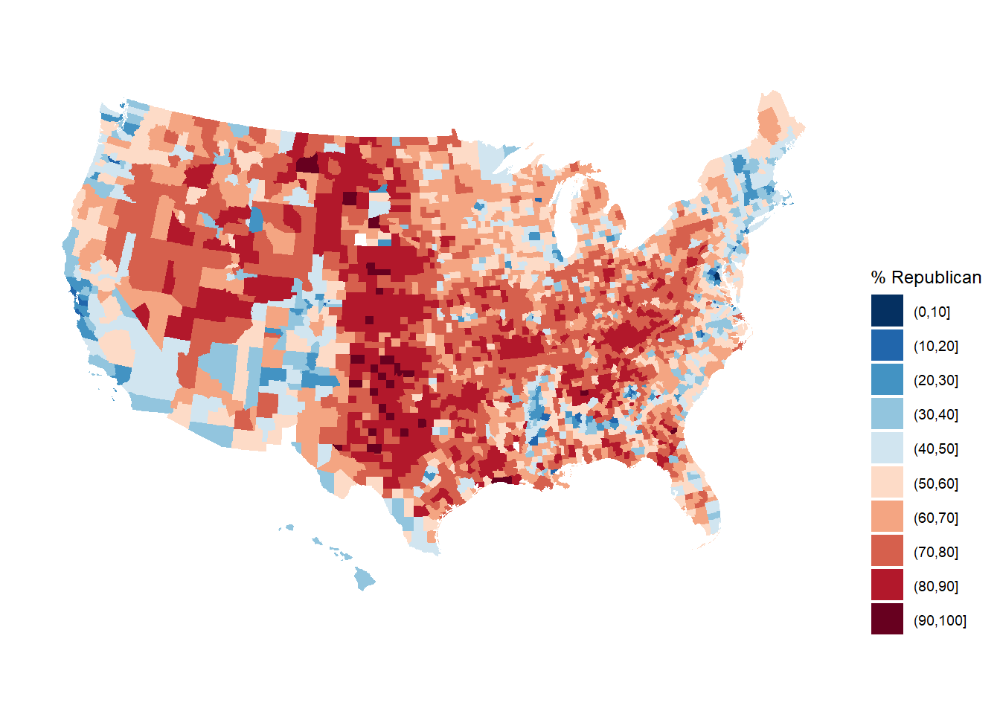

11 Note 02
12 Journal:
# Date "9/19"
library(tidyverse)
fave_places <- read.csv("https://ajohns24.github.io/data/112/our_fave_places.csv")
# Check it out
head(fave_places) latitude longitude
1 46 -123
2 33 52
3 48 -90
4 36 -112
5 59 25
6 39 -106# Date: "09/27/2024
# Why do we need visualizations? It allows for a quick, easy way to acquaint oneself with a dataset.
# Assume you are given a clean dataset, what are the first steps? Using the head() function, you should check and see what the variables are, you should also use the dim() function to see how many points you are using, you should also learn what the units of observation are. Use the str() function.
# The max number of categorical variables you can visualize in one plot is three, maybe four. The maximum number of numerical variables you could fit into one graph is seven.
# We can make a plot more effective by adding labels, legends, titles, subtitles, captions, alt_text, color, correct plots.
# The x axis is made up of latitude and the y axis is made up of longitude. # A tibble: 3 × 2
historical `n()`
<chr> <int>
1 blue 494
2 purple 1098
3 red 1517# Get a background map
library(socviz)
data(county_map)
# Make a choropleth map
library(RColorBrewer) # For the color scale
library(ggthemes) # For theme_map
elections |>
mutate(county_fips = as.character(county_fips)) |>
mutate(county_fips =
ifelse(nchar(county_fips) == 4, paste0("0", county_fips), county_fips)) |>
ggplot(aes(map_id = county_fips, fill = cut(repub_pct_20, breaks = seq(0, 100, by = 10)))) +
geom_map(map = county_map) +
scale_fill_manual(values = rev(brewer.pal(10, "RdBu")), name = "% Republican") +
expand_limits(x = county_map$long, y = county_map$lat) +
theme_map() +
theme(legend.position = "right") +
coord_equal()
# DATE: "10/07/2024"
library(tidyverse)
penguins <- read_csv('https://raw.githubusercontent.com/rfordatascience/tidytuesday/master/data/2020/2020-07-28/penguins.csv')Rows: 344 Columns: 8
── Column specification ────────────────────────────────────────────────────────
Delimiter: ","
chr (3): species, island, sex
dbl (5): bill_length_mm, bill_depth_mm, flipper_length_mm, body_mass_g, year
ℹ Use `spec()` to retrieve the full column specification for this data.
ℹ Specify the column types or set `show_col_types = FALSE` to quiet this message.# A tibble: 8 × 3
species sex n
<chr> <chr> <int>
1 Adelie female 73
2 Adelie male 73
3 Adelie <NA> 6
4 Chinstrap female 34
5 Chinstrap male 34
6 Gentoo female 58
7 Gentoo male 61
8 Gentoo <NA> 5# A tibble: 8 × 3
# Groups: species [3]
species sex n
<chr> <chr> <int>
1 Adelie female 73
2 Adelie male 73
3 Adelie <NA> 6
4 Chinstrap female 34
5 Chinstrap male 34
6 Gentoo female 58
7 Gentoo male 61
8 Gentoo <NA> 5penguin_avg <- penguins |>
group_by(species, sex) |>
summarize(avg_body_mass = mean(body_mass_g, na.rm = TRUE)) |>
na.omit()`summarise()` has grouped output by 'species'. You can override using the
`.groups` argument.# A tibble: 6 × 8
species island bill_length_mm bill_depth_mm flipper_length_mm body_mass_g
<chr> <chr> <dbl> <dbl> <dbl> <dbl>
1 Adelie Torgersen 39.1 18.7 181 3750
2 Adelie Torgersen 39.5 17.4 186 3800
3 Adelie Torgersen 40.3 18 195 3250
4 Adelie Torgersen NA NA NA NA
5 Adelie Torgersen 36.7 19.3 193 3450
6 Adelie Torgersen 39.3 20.6 190 3650
# ℹ 2 more variables: sex <chr>, year <dbl># A tibble: 6 × 3
# Groups: species [3]
species sex avg_body_mass
<chr> <chr> <dbl>
1 Adelie female 3369.
2 Adelie male 4043.
3 Chinstrap female 3527.
4 Chinstrap male 3939.
5 Gentoo female 4680.
6 Gentoo male 5485.# DATE "10/11/2024"
# Semi-join, uses the columns you select, if two have same name, you will get error message. left_join takes the comments from the right table and adds them to the left. inner_join only takes rows with overlap, full join will join everything, semi_join is like a filter, but filters in the rows with the same keys, anti_join is a version of the select, taking only the portions of the left table that won't merge with the right table. Anti join removes what the two tables both share.